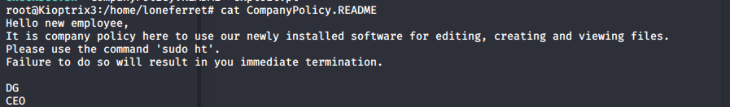

1. After visiting the site, there is a login.php page and is running LotusCMS. I checked searchsploit and discovered there is vulnerable version
2. I found a bash script to exploit it, and then got a shell as www-data
https://github.com/Hood3dRob1n/LotusCMS-Exploit
3. using find, i found a gconfig.php file with root credentials for the mysql databass

4. I then login to the mysql database using "mysql -u root -p" and switch to the gallary database

5. I found loneferret and another account in "dev_accounts", and an admin account for "gallarific_users"


6. After logging in to loneferret with the password found in the MySQL database (starwars), I am now in the home directory

7. when running sudo ht after exporting Iterm, we are met with a blue screen that can do pretty much anything. I use it to add unlimited provided to loneferret and then switch to root using sudo su